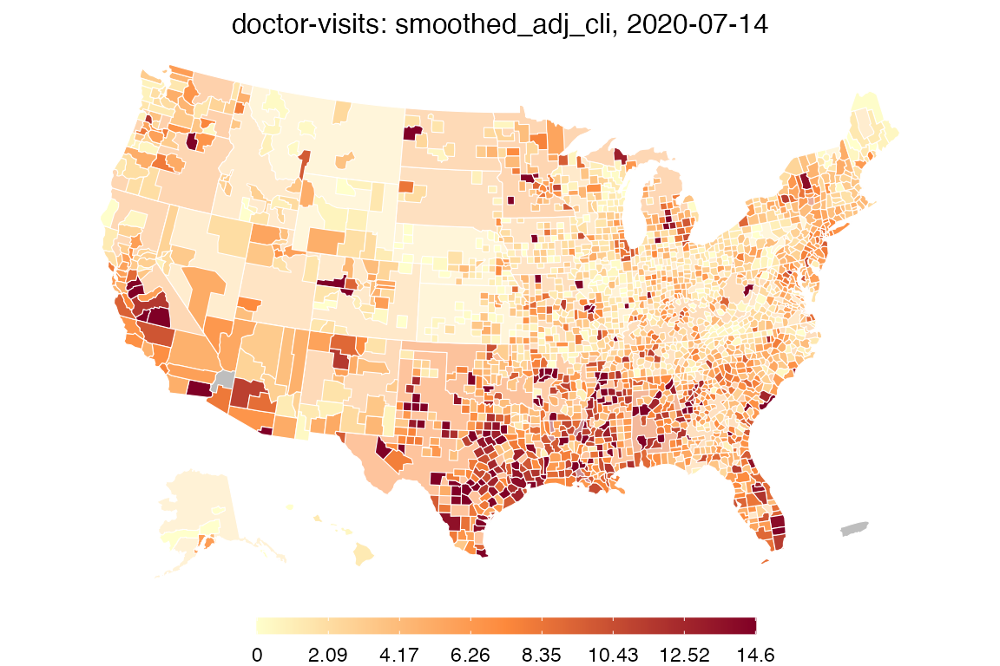
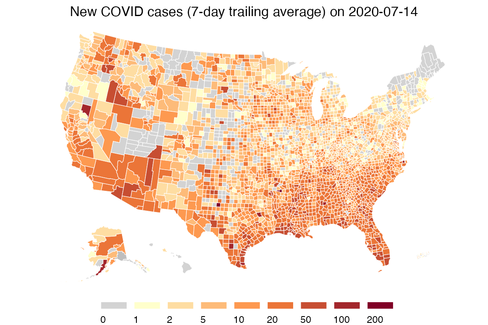
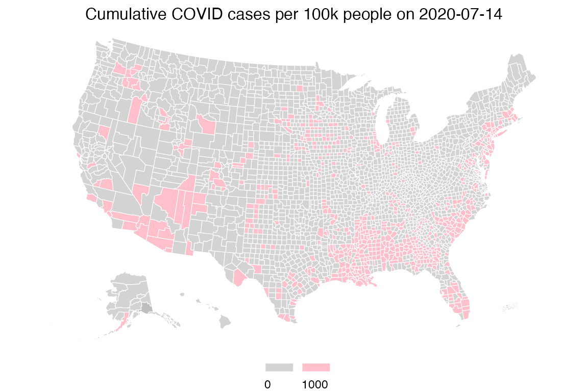
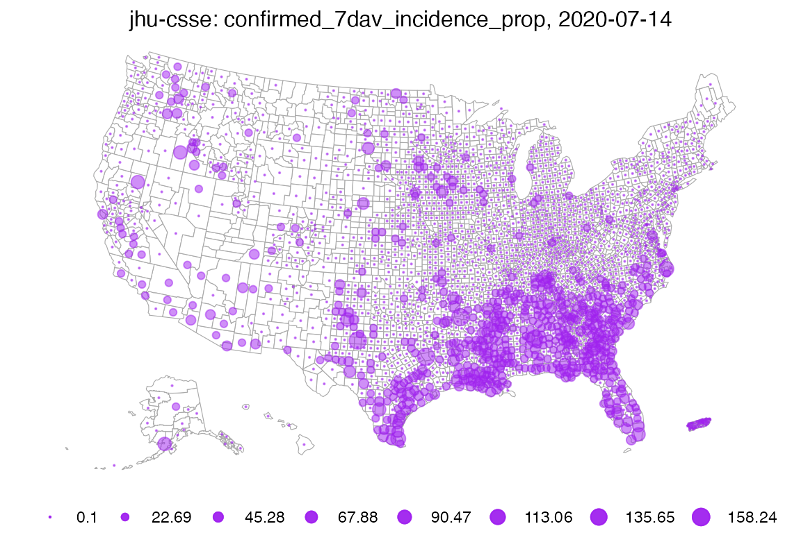
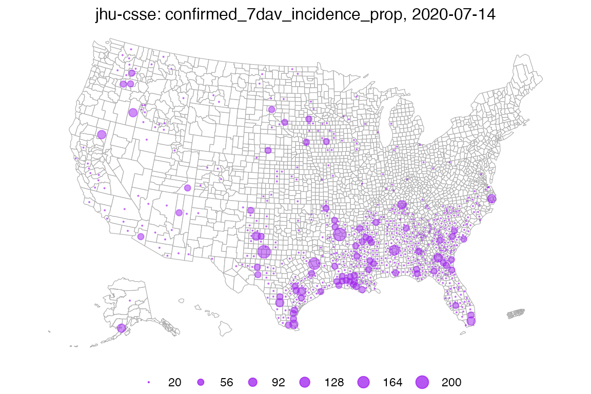

Once you’ve fetched some COVIDcast signals using covidcast_signal(), the returned covidcast objects can be plotted and mapped in various ways. The data structure is designed to be tidy and easily wrangled using your favorite packages, but the covidcast package also provides some tools for plotting and mapping signals in an easy way.
For this vignette, we’ll use our combination signal as an example; the combination indicator is a statistical combination of several data sources collected by Delphi, and for every county provides a measure of factors related to COVID activity. We’ll also use incident case counts. Fetching the data is simple:
library(covidcast) df_comb <- suppressMessages( covidcast_signal(data_source = "indicator-combination", signal = "nmf_day_doc_fbc_fbs_ght", start_day = "2020-07-01", end_day = "2020-07-14") ) summary(df_comb)
## A `covidcast_signal` data frame with 29102 rows and 10 columns.
##
## data_source : indicator-combination
## signal : nmf_day_doc_fbc_fbs_ght
## geo_type : county
##
## first date : 2020-07-01
## last date : 2020-07-14
## median number of geo_values per day : 2078df_inum <- suppressMessages( covidcast_signal(data_source = "jhu-csse", signal = "confirmed_7dav_incidence_num", start_day = "2020-07-01", end_day = "2020-07-14") ) summary(df_inum)
## A `covidcast_signal` data frame with 44744 rows and 10 columns.
##
## data_source : jhu-csse
## signal : confirmed_7dav_incidence_num
## geo_type : county
##
## first date : 2020-07-01
## last date : 2020-07-14
## median number of geo_values per day : 3196Choropleth maps
The default plot method for covidcast_signal objects, plot.covidcast_signal(), produces choropleth maps by using ggplot2 and the usmap package:
plot(df_comb)

The color scheme is automatically chosen to be similar to that used on the online COVIDcast mapping tool. Also, by default, this map shows the most recent day of data available in the data frame. One can choose the day and also choose the color scales, transparency level for mega counties, and title:
plot(df_comb, time_value = "2020-07-04", choro_col = cm.colors(10), alpha = 0.4, title = "Combination of COVID-19 Indicators on 2020-07-04")

By providing breaks and colors, we can create custom color scales, for example to have a log-spaced color scale for incident case counts:
breaks <- c(0, 1, 2, 5, 10, 20, 50, 100, 200) colors <- c("#D3D3D3", "#FFFFCC", "#FEDDA2", "#FDBB79", "#FD9950", "#EB7538", "#C74E32", "#A3272C", "#800026") # Note that length(breaks) == length(colors) by design. This works as follows: # we assign colors[i] iff the value satisfies breaks[i] <= value < breaks[i+1], # where we take breaks[0] = -Inf and breaks[N+1] = Inf, for N = length(breaks) plot(df_inum, choro_col = colors, choro_params = list(breaks = breaks), title = "New COVID Cases (7 Day Trailing Average) on 2020-07-14")

Lastly, we show how we can use custom breaks to (visually) answer the question: which counties have cumulative case rates of at least 1/100?
df_cprop <- suppressMessages( covidcast_signal(data_source = "jhu-csse", signal = "confirmed_cumulative_prop", start_day = "2020-07-01", end_day = "2020-07-14") ) breaks <- c(0, 1000) colors <- c("#D3D3D3", "#FFC0CB") plot(df_cprop, choro_col = colors, choro_params = list(breaks = breaks, legend_width = 5), title = "Cumulative COVID Cases per 100k People on 2020-07-14")

Bubble maps
As an alternative to choropleth maps, we can also quickly plot bubble maps. By default, bubble maps have 8 bubble size bins evenly spaced over the range, where zero always means zero bubble size. The legend shows all bins, interpreted as each bubble size meaning at least the corresponding value.
plot(df_inum, plot_type = "bubble")

As before, we can of course set customized breaks. As values to the left of the first bin do not get drawn, this map is much sparser, and highlights areas with larger case counts.

As a final example, suppose we want to plot only counties in the state of Texas. We’d like to compare counts per 100,000 against absolute counts, so we fetch the proportion signal:
df_iprop <- suppressMessages( covidcast_signal(data_source = "jhu-csse", signal = "confirmed_7dav_incidence_prop", start_day = "2020-07-01", end_day = "2020-07-14") )
Then we make two maps side-by-side with custom ranges:
library(gridExtra) breaks1 <- c(0, 1, 10, 100, 1000) breaks2 <- c(0, 10, 50, 100, 500) p1 <- plot(df_inum, plot_type = "bubble", bubble_params = list(breaks = breaks1, max_size = 6), include = "TX", bubble_col = "red", title = paste("Incidence Number on", max(df_inum$time_value))) p2 <- plot(df_iprop, plot_type = "bubble", bubble_params = list(breaks = breaks2, max_size = 6), include = "TX", bubble_col = "red", title = paste("Incidence Proportion on", max(df_iprop$time_value))) grid.arrange(p1, p2, nrow = 1)

Time series plots
Let’s fetch the combination indicator and case counts, but for all states rather than for all counties. This will make the time series plots more manageable.
suppressMessages({ df_comb_st <- covidcast_signal(data_source = "indicator-combination", signal = "nmf_day_doc_fbc_fbs_ght", start_day = "2020-04-15", end_day = "2020-07-01", geo_type = "state") df_inum_st <- covidcast_signal(data_source = "jhu-csse", signal = "confirmed_7dav_incidence_num", start_day = "2020-04-15", end_day = "2020-07-01", geo_type = "state") })
By default, time series plots show all available data, including all geographies. A line for every state would be unmanageable, so let’s select a few states and plot all data for them:
library(dplyr) states <- c("ca", "pa", "tx", "ny") plot(df_comb_st %>% filter(geo_value %in% states), plot_type = "line")


Notice how in Texas, the combined indicator rose several weeks in advance of confirmed cases, suggesting the signal could be predictive. Delphi is investigating these signals for their usefulness in forecasting, as well as hotspot detection and will publish results when they are available.
Manual plotting
Using ggplot2 or your favorite plotting package, we can easily plot time series manually, without using the plot.covidcast_signal() method. You can use this to customize the appearance of your plots however you choose.
For example:
library(ggplot2) suppressMessages({ df_comb_md <- covidcast_signal(data_source = "indicator-combination", signal = "nmf_day_doc_fbc_fbs_ght", start_day = "2020-06-01", end_day = "2020-07-15", geo_values = name_to_fips("Miami-Dade")) df_inum_md <- covidcast_signal(data_source = "jhu-csse", signal = "confirmed_7dav_incidence_num", start_day = "2020-06-01", end_day = "2020-07-15", geo_values = name_to_fips("Miami-Dade")) }) # Compute the ranges of the two signals range1 <- df_inum_md %>% select("value") %>% range range2 <- df_comb_md %>% select("value") %>% range # Function to transform from one range to another trans <- function(x, from_range, to_range) { (x - from_range[1]) / (from_range[2] - from_range[1]) * (to_range[2] - to_range[1]) + to_range[1] } # Convenience functions for our two signal ranges trans12 <- function(x) trans(x, range1, range2) trans21 <- function(x) trans(x, range2, range1) # Transform the combined signal to the incidence range, then stack # these rowwise into one data frame df <- select(rbind(df_comb_md %>% mutate_at("value", trans21), df_inum_md), c("time_value", "value")) df$signal <- c(rep("Combined indicator", nrow(df_comb_md)), rep("New COVID-19 cases", nrow(df_inum_md))) # Finally, plot both signals ggplot(df, aes(x = time_value, y = value)) + labs(x = "Date", title = "Miami-Dade County") + geom_line(aes(color = signal)) + scale_y_continuous( name = "New COVID-19 cases (7-day trailing avg)", sec.axis = sec_axis(trans12, name = "Combination of COVID-19 indicators") ) + theme(legend.position = "bottom", legend.title = ggplot2::element_blank())

Again, we see that the combined indicator starts rising several days before the new COVID-19 cases do, an exciting phenomenon that Delphi is studying now.